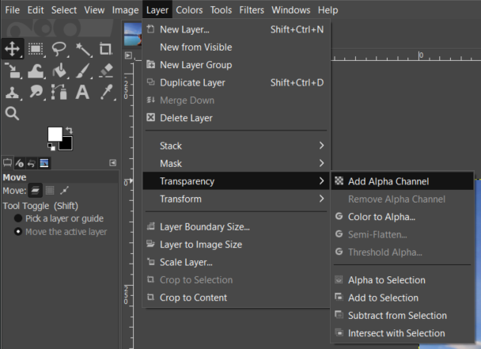
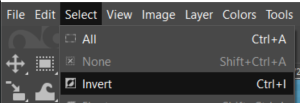
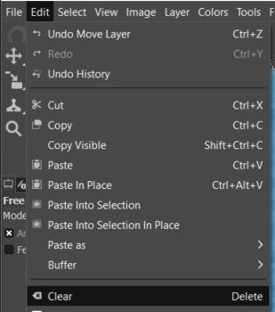
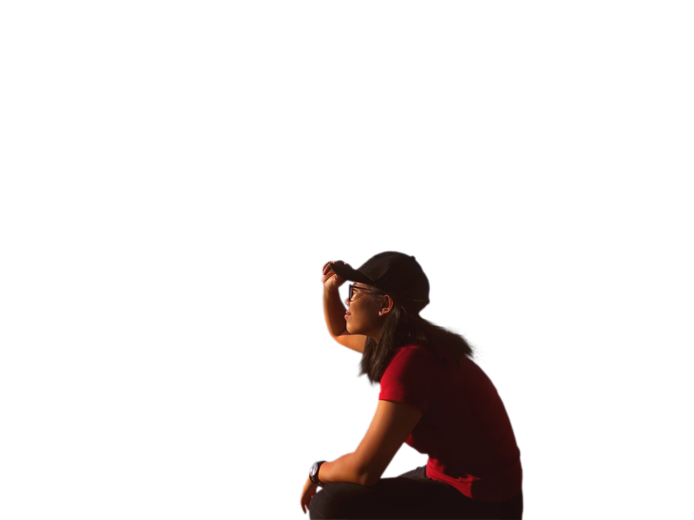
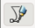
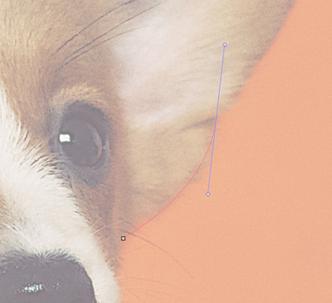
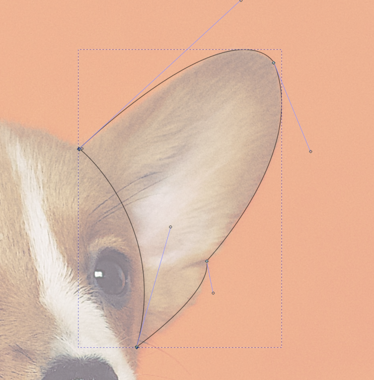
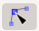
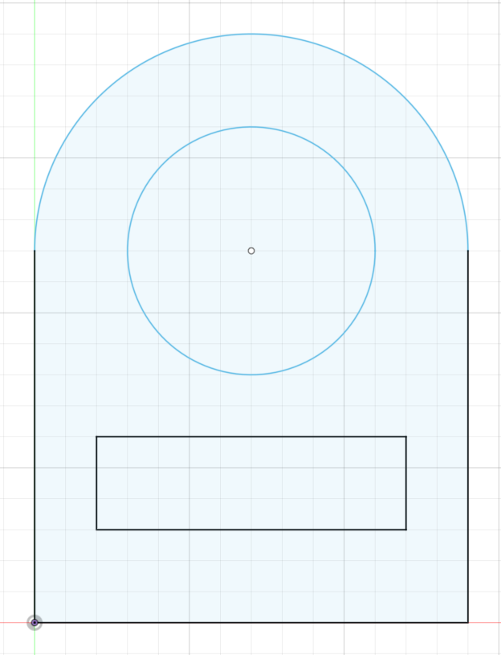
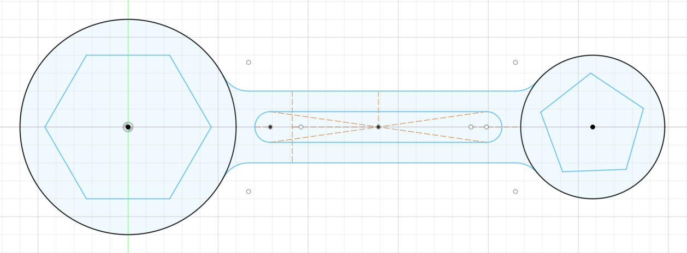

Raster Graphics
Using the software GIMP, I removed the background from picture A and replaced it with picture B. I refered to this video by gimp workshop found here.

Picture B
To remove the background, firstly start by clicking Layer > Transparency > Add Alpha Channel.

Next, use the Free Select Tool to outline the parts you want to keep, make sure the starting node is also the last node (closed off).
Next, select Select > Invert.

Lastly, select Edit > Clear. This should make the background transparent.


To change the background, just add in the picture of choice and the finished product should be something like this.
Vector Graphics
Using the software Inkscape, I created a vector image using this picture of a puppy. I refered to this video by Logos by Nick found here to complete this task.

First, you should start by adding a new layer on the top of the current one which is your image. change the opacity of your image layer to about 50% so that you can work on your drawing easily.
Next, use the bezier tool  to draw vectors. You can click one point then another and hold and drag to form a curve. An example is shown below.

Once you are done with one area, your path should look something like this.

Next, use the edit path tool  to edit the the curves or lines where needed. You can move nodes or the lines itself. Once you are satisfied, just select the enclosed path area and choose the colour you would like to fill it with. To remove the outline hold 'shift' then click the cross (clear colour).
To create a new area, remember to use a new layer so that it is way more managable. Repeat this process a few times until you are done and have a lovely vector image. I created mine both in colour and greyscale, they can be seen below.
2D Sketching Exercise 1 & 2
Here, we will start the use of Autodesk Fusion 360 as our CAD software. We started learning the basics of CAD by learning how to sketch in Fusion 360. We touched simple sketch functions like lines, circles, rectangle, construction lines, measure, constraints and a few more. Fusion 360 is very similar to Autodesk Inventor that I had previously learnt in one of my year 1 modules.
We started off with exercise 1 which is a simple sketch as seen below. This involved the used of lines, rectangles and circles to complete as well as the trim functiom to make it look neater. The file can be found here.

Next for exercise 2, we did a slightly tougher sketch which involved using circles, polygons and construction lines as well as contraints. The file can be found here.
